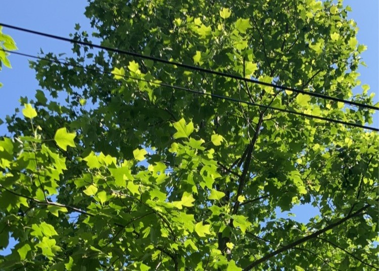
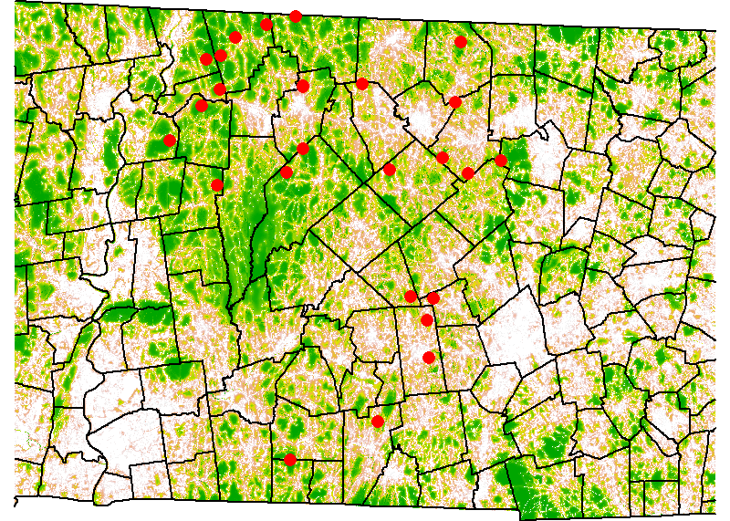
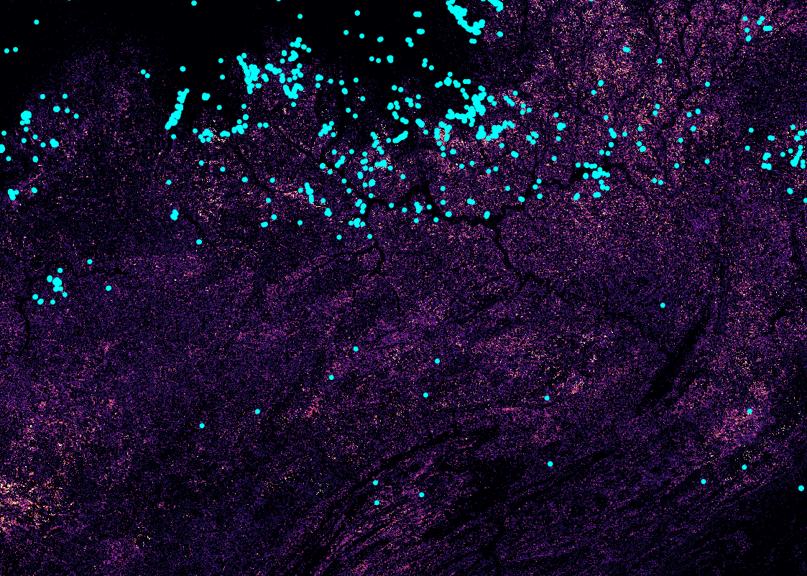
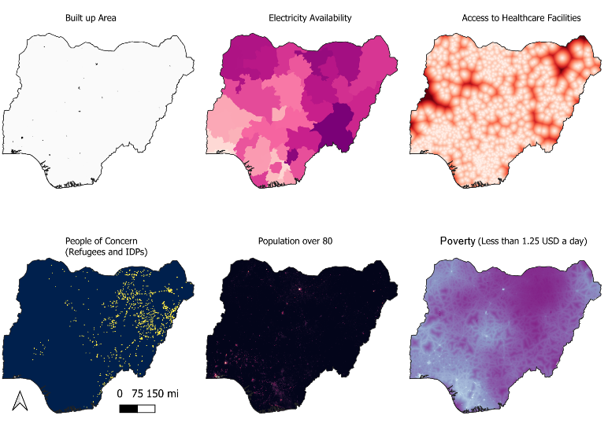
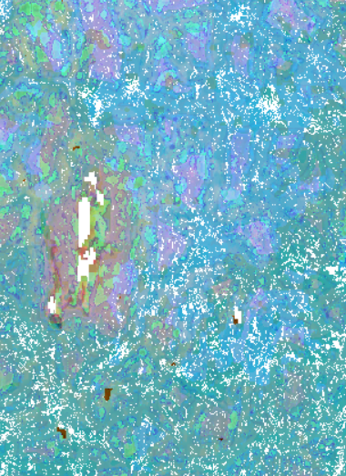

Adlai Nelson, GIS Portfolio

I am a current student in the MSc. Geographic Information Science program at Clark Unviersity. I'm passionate about using GIS and Remote Sensing to solve environmental issues. I have experience in urban forestry, environmental modeling,
Please visit the projects tab for examples of work that I have done, and feel free to reach out to me via Linkedin or email
Projects




Modeling Soundscape Indicies using Random Forest in R
Course: Geospatial analysis with R, instructor Michael Cecil
Group Members: Abby Beilman, Denys Godwin
This project observed the biodiversity health of central Massachusetts using data derived from sound recorders, measuring the strength of bird calls,
We used a variety of spatial datasets to understand the relationship between birdsong strength and biophysical covariates, such as biomass, distance from roads, and nighttime lights. To see more, view the full report.

Modal Header
Cartography Projects
These maps were created for Narrative Cartography, taught by Jonathan Ocon


Creating a Climate Vulnerability Index for Nigeria
Course: GIS for International Development, Prof. Yelena Ogneva-Himmelberger
This project sets out to map the spatial extent and variance of heat vulnerability in Nigeria for the present scenario and a realistic scenario modeled to the middle of the century. Using a diverse set of input data, a heat vulnerability index representing exposure, vulnerability, and adaptive capacity to heat was created for two time periods.

Urban Forestry Research
Factors Influencing Short- and Medium- Term Yard Tree Survivorship in Worcester, Massachusetts
Cartography modal5
Course: Advanced Raster GIS, Prof. Florencia Sangermano
Group Members: Abby Beilman, Naoya Morishita, Yu-Yun Ruan